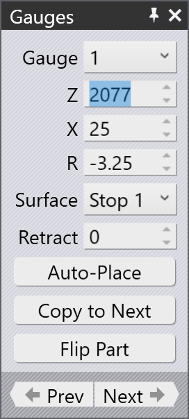
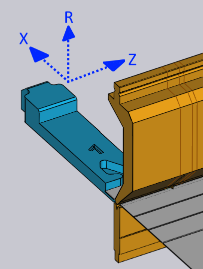
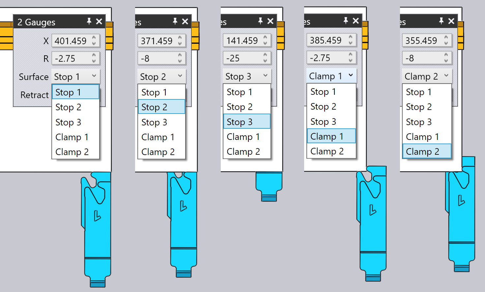
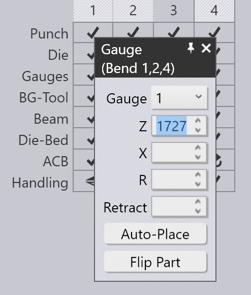
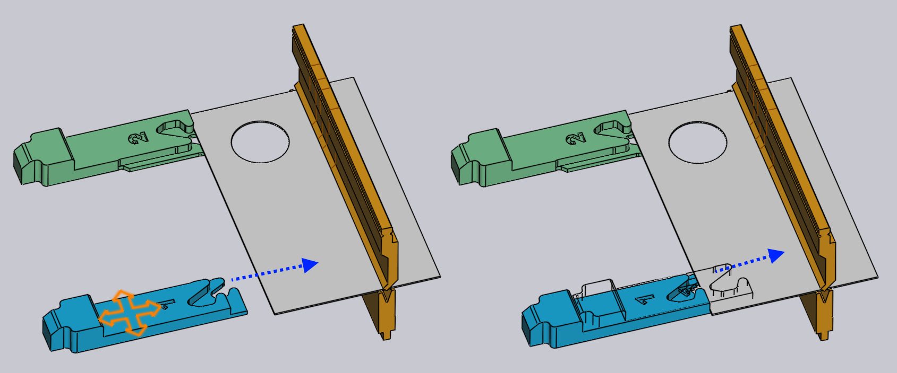
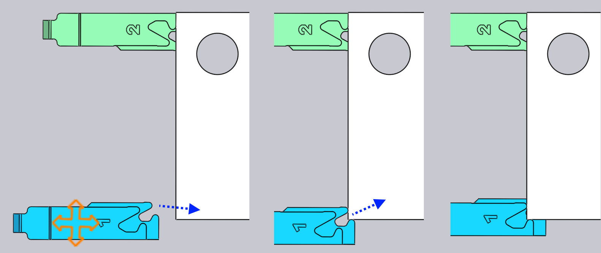

Úprava dorazových palců
Polohy dorazových palců pro každý ohyb lze nastavit pouhým kliknutím na dorazový palec – tím se otevře panel Doraz, který je zobrazen vedle.
Panel Doraz

-
Pomocí voliče Gauge vyberte doraz, který chcete upravit (můžete také jednoduše kliknout na doraz a zobrazí se panel pro úpravu tohoto dorazu). Pokud kliknete na druhý doraz pomocí Shift+kliknutí, můžete upravit společná nastavení obou dorazů najednou.
-
Vstupy Z, X a R se používají k nastavení polohy dorazů ve třech rozměrech. U většiny ohraňovacích lisů jsou osy uvedeny tak, jak je znázorněno na obrázku níže:[1]

-
Volič Surface se používá k zapojení jiné plochy dorazového palce do dílu. Sada dostupných ploch závisí na stroji a ne všechny plochy mohou být použitelné pro všechny ohyby (TecZone Bend informuje, když nelze použít konkrétní plochu). Obrázek níže ukazuje různé použité plochy:

-
Nastavení Retract se používá k nastavení vzdálenosti pro zpětný pohyb dorazu před ohýbáním. U některých ohybů musí být doraz po sevření dílu razníkem, ale před jeho ohybem, stažen zpět (ve směru +X) o určitou vzdálenost (aby se zabránilo kolizi). Toto nastavení se používá k ovládání vzdálenosti zpětného pohybu. Při úpravách TecZone Bend doraz skutečně stáhne o zadanou hodnotu jako náhled, takže můžete posoudit, zda je zpětný pohyb dostatečný.
-
Pomocí tlačítka Auto-Place požádejte TecZone Bend o automatický výpočet polohy pro zadaný doraz. Obecně bude mít TecZone Bend více možností dorážení a opakovaným kliknutím na tlačítko Automatické umístění budete procházet tyto možnosti. Pro návrat k výchozímu nastavení zavřete panel dorazu, klikněte znovu na doraz a poté klikněte na Automatické umístění – první vybraná poloha je pak výchozí (což by byl také výsledek původního automatického řazení a nastrojení).
-
Pomocí tlačítka Flip Part vložte druhou stranu dílu do stroje a znovu vypočítejte dorážení. Je to podobné jako tlačítko Zrcadlit díl v panelu ohybu.
-
Pomocí tlačítek Prev a Next přejděte na předchozí nebo následující ohyb a upravte polohy dorazů tohoto ohybu.
Pokročilé
Zde je několik pokročilejších operací s dorazy:
Úprava dorážení pro více ohybů
Je možné upravit polohy dorazů pro více ohybů současně. Chcete-li to provést,
nejprve vyberte více ohybů Shift+kliknutím na čísla ohybů v navigátoru
ohýbání. Poté klikněte na doraz. Obrázek vedle ukazuje polohy dorazů pro ohyby
1, 2 a 4, které jsou upravovány společně: 
V tomto příkladu mají všechny ohyby stejnou polohu Z pro doraz a úpravou této polohy se upraví poloha Z pro všechny dorazy. Hodnoty polohy X a R jsou prázdné, protože se liší pro každý ohyb. Můžete však zadat hodnotu X nebo R a ta se použije pro všechny ohyby.
Obecně budete tuto funkci potřebovat jen zřídka. Panel dorazů zná omezení konkrétního ohraňovacího lisu a vynutí všechna požadovaná omezení. Například polohy R obou dorazů musí být u některých strojů stejné (nemají nezávislé osy R1 a R2) – TecZone Bend zajistí, že při úpravě polohy R jednoho dorazu se druhý okamžitě přizpůsobí.
U některých strojů s 2osými dorazovými systémy se polohy Z dorazů nastavují ručně a obvykle se nemění od ohybu k ohybu (protože to by znamenalo, že operátor by musel ručně nastavovat dorazy po každém ohybu). U těchto strojů se při nastavení polohy Z pro jeden ohyb nastaví stejná poloha pro všechny ohyby. Stav kolize, stav zapojení dorazu atd. se vypočítávají okamžitě pro všechny ohyby, takže je velmi snadné najít společné polohy Z1 a Z2, které mohou být přijatelné pro všechny ohyby.
Přetažení dorazů
Ačkoli lze přesné polohy dorazů nastavit zadáním hodnot Z, X a R, často je jednodušší umístit dorazy pouhým přetažením do kontaktu s dílem.
-
Jedním kliknutím vyberte doraz, který chcete přetáhnout.
-
Klikněte na vybraný doraz a přetáhněte jej na požadované místo. V závislosti na úhlu pohledu se doraz táhne buď po vodorovné, nebo svislé rovině.
Obvykle začnete s dorazem mimo díl a táhnete ho směrem k dílu, dokud se ho
nedotkne. Můžete pokračovat v tažení dále (zatlačením dorazu do dílu) a
drátový model se bude dále pohybovat, ale skutečný doraz se zastaví, jakmile
se dotkne dílu. 
Obrázek výše ukazuje, jak to funguje – začneme táhnout doraz směrem k plechu ve směru označeném šipkou. Jakmile se doraz dotkne plechu, zastaví se a pohybuje se pouze drátový model (aby vám ukázal, kam se pokoušíte doraz přetáhnout). Díky tomu lze snadno umístit doraz tak, aby se dílu pouze dotýkal, bez mezer a bez jakýchkoli kolizí.
Na obrázku výše se díváme na doraz z pohledu, který je blízko shora dolů. Doraz se tedy pohybuje v rovině XZ a hodnota R dorazu zůstává konstantní. Pokud otočíte pohled do více čelního pohledu, doraz se pohybuje v rovině XR a hodnota Z zůstává konstantní.
Upínací úchyty během přetahování
Přetažením dorazu lze snadno a přesně umístit dorazy, když používáte jednu z ploch typu Stop. Pokud používáte jednu z ploch typu Upnutí, to je obtížnější, protože musíte zapojit obě plochy upínacího palce proti dílu.
TecZone Bend to usnadňuje tím, že poskytuje automatické úchyty, když je doraz
blízko možné polohy upnutí. Chcete-li tento mechanismus použít, nejprve otočte
pohled tak, abyste viděli dorazy shora dolů. Poté přetáhněte dorazy tak, aby
roh, který chcete upnout, zapadal do apertury palců: 
Obrázek výše ukazuje probíhající upínací operaci. Když přitáhneme dorazy blízko k poloze upnutí, upnou se do pozice Upnutí 1 (viz obrázek výše, uprostřed). Při dalším tažení dorazy zaskočí do polohy Upnutí 2 (viz obrázek výše vpravo). Všimněte si, že hodnota R dorazu se automaticky upravuje nahoru nebo dolů, jak se přesouváme k těmto různým upínacím úchytům.